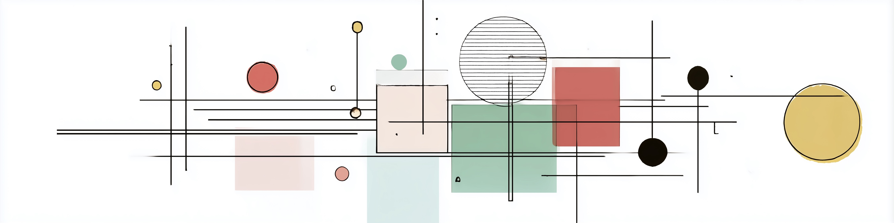
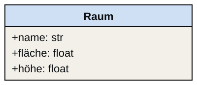
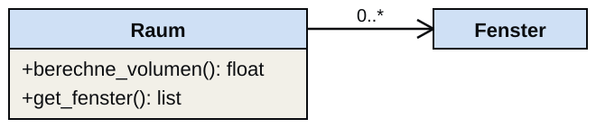
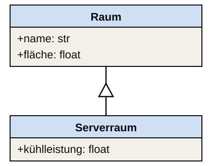

Objekte — Implementierung

Nothing is particularly hard if you divide it into small jobs.
— Henry Ford
Von UML zu Python
Das Mapping
Von UML zu Python
In S04 haben wir Klassen als Entwurfseinheiten kennen gelernt und das UML-Klassendiagramm als Notation für den Entwurf verwendet. In dieser Einheit übersetzen wir diesen Entwurf in Python-Code — und lernen, wie wir KI-generierten Code gegen den Entwurf verifizieren.
Von UML zu Python — das Mapping
Jedes Element des UML-Klassendiagramms hat eine direkte Python-Entsprechung. Diese Übersetzung ist das Kernziel der Implementierungsphase. Die KI kann diese Übersetzung automatisch vornehmen — aber nur wenn das Diagramm vollständig ist.
Klassenname und Attribute

Das class-Schlüsselwort leitet die Klassendefinition ein; der Name entspricht direkt dem UML-Klassenname. Die Attribute des UML-Diagramms werden im Konstruktor __init__ als self.attributname definiert. self ist eine Selbstreferenz auf die aktuelle Instanz — sie muss immer der erste Parameter einer Methode sein.
Methoden und Assoziationen

Methoden aus dem UML-Diagramm werden als Funktionen mit self als erstem Parameter definiert. Assoziationen — Beziehungen zu anderen Klassen — werden als Instanzattribute implementiert. Eine 0..*-Assoziation zu Fenster wird als leere Liste self.fenster = [] initialisiert.
BIM-Beispiel: Raum-Klasse
KI generiert die Raum-Klasse
BIM-Beispiel: KI generiert die Raum-Klasse
Die KI übernimmt die Übersetzung des UML-Diagramms in Python-Code. Bevor wir den Code ausführen, wenden wir Pattern C an: Wir lesen den Code und stellen Verständnisfragen, bevor wir ihn laufen lassen. Das trainiert die Verifikationsgewohnheit.
Verifizieren gegen das Diagramm
Die Verifikation läuft systematisch gegen das UML-Diagramm. Der Code muss das Diagramm vollständig abbilden — nicht mehr und nicht weniger. Jede Abweichung ist entweder ein Fehler im Code oder eine Unvollständigkeit im Diagramm.
Python-Klassen — Syntax im Detail
Konstruktor __init__
Python-Klassen — Syntax im Detail
Dieser Abschnitt behandelt die vollständige Syntax für Python-Klassen: Konstruktor, Instanz- und Klassenattribute, Methoden, Instanzerzeugung und Methodenaufruf.
Konstruktor __init__
Der Konstruktor __init__() ist eine spezielle Methode, die festlegt, wie eine neue Instanz der Klasse erzeugt wird. Er wird genutzt, um Attribute initial zuzuweisen und Initialisierungsschritte durchzuführen. self ist dabei eine Selbstreferenz auf die neue Instanz. Die Zuweisung self.x = x bedeutet, dass wir dem neuen Instanzattribut x der Instanz self den Wert des Parameters x zuweisen — obwohl beide gleich heißen, sind sie nicht dieselbe Variable.
Da __init__() eine Funktion ist, kann man auch Defaultwerte definieren: def __init__(self, x=0.0, y=0.0).
Instanz- vs. Klassenattribute
Instanzattribute werden in __init__ mit self.attributname definiert und können in jeder Instanz unterschiedlich sein. Klassenattribute werden auf Klassenebene (außerhalb von __init__) definiert und haben denselben Wert für alle Instanzen. Bei veränderlichen Klassenattributen (Listen, Dictionaries) gilt: Eine Änderung durch eine Instanz wirkt sich auf alle anderen aus.
Methoden
Klassen definieren eigene Methoden, die speziell für Instanzen dieser Klasse angewendet werden. Methoden werden als Funktionen innerhalb der Klassendefinition deklariert und besitzen immer self als ersten Parameter. Dadurch kann auf die Attribute oder andere Methoden der Instanz zugegriffen werden.
Instanzen erzeugen
Objekte selbst sind immer Instanzen einer Klasse. Eine Klasse kann beliebig viele Instanzen haben; alle sind gleich aufgebaut, besitzen aber nicht notwendigerweise dieselben Attributwerte. Instanzen werden erzeugt, indem der Klassenname wie eine Funktion aufgerufen wird — mit den Parametern des Konstruktors (ohne self). Benannte Parameter machen die Bedeutung der Werte explizit und verhindern Verwechslungen.
Assoziationen implementieren
Assoziationen als Instanzattribute
Assoziationen implementieren
In Python werden Assoziationen als Instanzattribute umgesetzt. Die Multiplizität aus dem UML-Diagramm bestimmt direkt die Implementierung:
0..*→ Liste, in__init__als[]initialisiert1→ Pflichtparameter im Konstruktor0..1→ optionales Attribut mit DefaultNone
Die Beziehungsrichtung im UML-Diagramm bestimmt, in welcher Klasse das Attribut definiert wird.
Kapselung
Kapselung: Attribute schützen
Kapselung
Kapselung schützt Attribute vor unerwünschtem Zugriff. Private Attribute (__name) sind nur innerhalb der Klasse über self zugänglich; der direkte Zugriff von außen schlägt fehl. Python setzt hier allerdings kein echtes Zugriffsverbot um, sondern verwendet sogenanntes Name Mangling: Intern wird der Name umgeschrieben, sodass versehentlicher Zugriff erschwert wird. Um Lesezugriff zu ermöglichen, definiert man Getter-Methoden. Kapselung ist im UML-Diagramm durch die Sichtbarkeitsmarker + (public), # (protected) und - (private) ausgedrückt.
Vererbung
Vererbung
Vererbung

Vererbung ist eine der wichtigsten Eigenschaften der Objektorientierung. Unterklassen erben alle Attribute und Methoden der Oberklasse. Beim Deklarieren gibt man die Oberklasse in Klammern an: class Kind(Eltern):. Der Konstruktor der Oberklasse muss explizit mit super().__init__(...) aufgerufen werden; sonst werden die Attribute der Oberklasse nicht initialisiert.
Unterklassen können Methoden der Elternklasse überschreiben (Polymorphismus) — und so dasselbe Interface unterschiedlich implementieren.
Typische KI-Fehler bei Klassen
KI-Fehler 1 — Mutable Default in __init__
KI-Fehler 1: Mutable Default
Ein häufiger KI-Fehler ist die Verwendung von veränderlichen Objekten (Listen, Dictionaries) als Defaultwerte in __init__. Dieses Problem ist nicht auf Klassen beschränkt, sondern gilt allgemein für jede Python-Funktion mit veränderlichem Defaultwert. Der Defaultwert wird nur einmal beim Definieren der Funktion ausgewertet — alle späteren Aufrufe oder Instanzen teilen dann dieselbe Liste. Die korrekte Lösung ist der Defaultwert None mit expliziter Initialisierung im Konstruktor.
KI-Fehler 2: Fehlendes self
Methoden müssen immer self als ersten Parameter haben. Ohne self hat die Methode keinen Zugriff auf die Instanzattribute und wird beim Aufruf mit einem TypeError fehlschlagen. Dieser Fehler passiert KI-Systemen besonders dann, wenn Methoden aus freien Funktionen umgebaut werden.
KI-Fehler 3: cls statt self
In Python ist cls die Konvention für den ersten Parameter von Klassenmethoden (dekoriert mit @classmethod). KI-Systeme verwechseln cls und self gelegentlich, insbesondere wenn sie zwischen verschiedenen Methodentypen wechseln. Bei einer mit @classmethod dekorierten Methode ist cls die Klasse selbst, nicht die Instanz. Der Zugriff auf Instanzattribute wie cls.fläche schlägt dann mit einem AttributeError fehl, weil fläche erst in __init__ an der Instanz entsteht.
Code-Verständnis-Checkliste
Drei Fragen für KI-generierten Klassencode
Code-Verständnis-Checkliste
Diese drei Fragen bilden den Kern der Verifikation von KI-generiertem Klassencode. Wer sie routinemäßig stellt, entwickelt die Kompetenz, generierten Code kritisch zu lesen — statt ihn blind zu übernehmen.